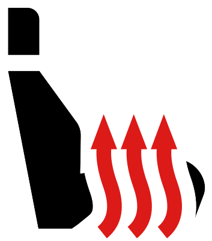

Les sièges avant peuvent être chauffés ou chauffés et ventilés en fonction de l’équipement du véhicule. Les sièges arrières extérieurs peuvent uniquement être chauffés.
Chauffage des sièges avant
Appuyer sur
 ou
ou 
sur l’écran d’infodivertissement.

Le chauffage est activé à la puissance de chauffage maximale. Un appui répété sur la touche réduit la puissance de chauffage du siège jusqu’à l’extinction.
Chauffage/ventilation des sièges avant
Appuyer sur ou sur l’écran d’infodivertissement.
Dans le menu affiché, régler la puissance de chauffage ou le niveau d'aération.
Chauffage de siège arrière
Appuyer à nouveau sur la touche ou
 dans la console centrale.
dans la console centrale.Le chauffage est activé à la puissance de chauffage maximale. Un appui répété sur la touche réduit la puissance de chauffage du siège jusqu’à l’extinction.

Affichage de la puissance de chauffage/du niveau de ventilation
La puissance de chauffage/le niveau de ventilation est indiqué(e) par le nombre de témoins de contrôle allumés :
Sur l'écran d'infodivertissement
Dans la touche de la console centrale arrière (s’applique aux sièges arrière)
Informations complémentaires

Si le moteur est arrêté avec le chauffage / la ventilation allumé(e) et redémarré dans un délai d’environ 10 minutes, le chauffage / la ventilation de sièges avant reprendra selon le réglage défini avant l’arrêt du moteur.
Le chauffage/la ventilation des sièges avant est automatiquement désactivé(e) à la descente du véhicule. Le chauffage/la ventilation de siège se remet automatiquement en marche lorsque le siège est de nouveau occupé.